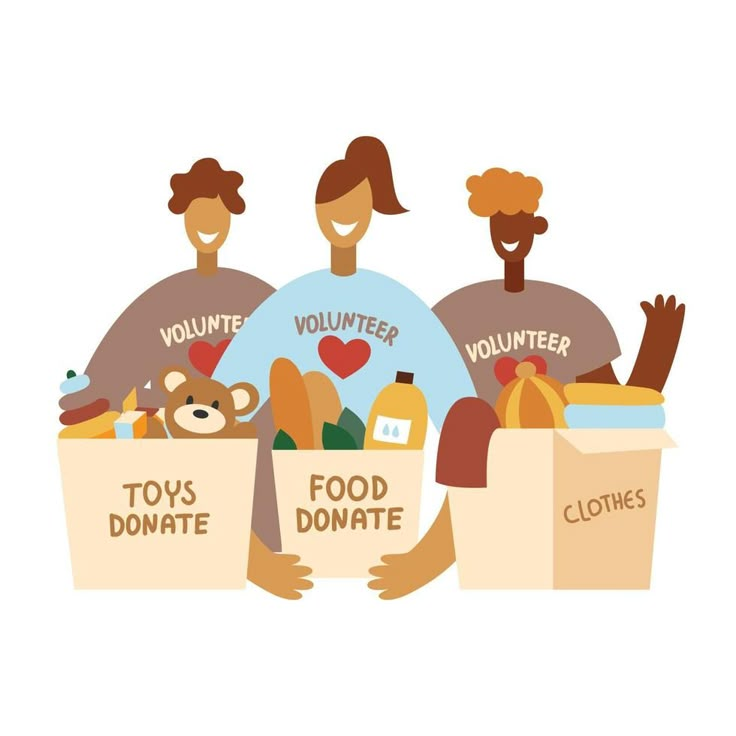

le rôle du bénévolat
Le bénévolat renforce la solidarité sociale en venant en aide aux personnes vulnérables et en distribuant des ressources essentielles. Il permet aussi de protéger l-environnement, de sensibiliser les citoyens et de partager ses compétences à travers divers événements.
bénévolat

Le bénévole réalise l'application à partir du besoin.il engage dans les opportinuités du bénévolat
le role du bénévole
travailler en équipe
le bénévole travail en équipe et aide les autres et crée un impact positif dans la société .